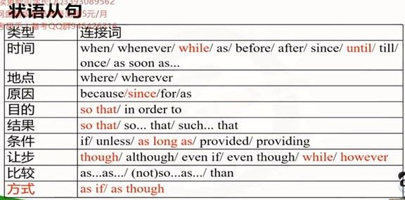

time: 00:

time:00:08:50
Though you are a good player, out team lost. //conj. 虽然, 尽管
You are a good player though. //adv. 但是, 尽管如此
You are a good player, though. //adv. 但是, 尽管如此
However hard it is, I want to be with you. //conj. 不管怎样, however = no matter how
However, it is hard. //adv. 转折副词: 然而, 太难了.
time:00:17:02
I work hard so that I can pay the rent. //表目的: 以便. 我努力工作, 以便 我能支付房租.
I worked hard so that I got a fat pay rise. //表因果: 因此. 我努力工作, 因此 我获得了大幅度的加薪.
I worked so hard that I got a fat pay rise. //表因果: 因此. 我工作如此努力, 因此 我获得了大幅度的加薪.
time: 00:21:29
It took me 3 times as long as I had expected.
花费了我预期时间的3倍(那么长). //as long as: 和...一样长, 一样久
I love you as long as you love me.
我爱你只要你爱.
time: 00:24:40
until 结构的理解
Until these issues are resolved, a technology of behavior will continue to be rejected.(2002)
直到 这些问题被解决 之前, 一个行为技术将会继续被拒绝.
until用法:
1.until + 从句谓语非延续(瞬间发生call), 主句谓语延续(一直坐着).
2.until 前后的主句状态会发生变化.
a.I will come back when you call me. 你叫我的时候我就回来.
b.I will stay there until you call me. 我会呆在这儿直到你喊我(之前).
c.I will not come back until you call me. 我不会回来, 直到你喊我(之前).
根据上方句子, 判断下方改写的句子对错.
This technology will be applied when issues are settled.(T/F)
time: 00:36:40
The system also failed to regularly include women on juries until the mid 20th century.(2010英二)
根据上方句子, 判断改写句子对错.
Women were excluded from juries in the past.(T/F)
=> in the past指的是当前之前, 比20世纪中期 的时间范围更大了.
time: 00:44:41
状从省略
当状从连接词如 Although, If... + doing, to do, done, adj, prep => 省略了: 主 + be
Although happily employed, He maintains his agent at CareerBuilder.
=> Although He is happily employed, ...
=> 尽管他被愉快地雇佣了, 但是他还是在 凯业必达(网站名) 保留了他的经纪人.
If properly handled, the dreadful handicap may become a driving force.
=> If the dreadful handicap is properly handled, ...
=> 如果这种可怕的障碍被合适地处理了, 那么它将会成为一个驱动力.
time: 00:47:50
练习
1.Take this medicine ___ you can recover soon.
A.which B.as C.so that D.as if
选so shat
2.He speaks English ___ he were an Englishman.
A.which B.as C.so that D.as if
were是过去式,选as if
time: 00:58:13
11.提升篇: 特殊句式
3大句式
一. 强调句的一般句式:
It is/was... that/who...
It was honor that encouraged me.
是荣耀 鼓励了我.
It was you who/that encouraged me.
是你 鼓励了我.
time: 01:01:01
强调句 与 形主 的区别:
强调句: 去掉 It be ... that 后, 句子亦然完整
形主 : 去掉 It be ... that 后, 句子不完整
1.It is the biggest changes that the arrival of a new satellite will bring about in the long term.(2002)
=> arrival n. 到来；到达；到达者
=> satellite n. 卫星；人造卫星；卫星国家 adj. 卫星的
=> term /tɜːm/ n. 术语；学期；期限；条款 vt. 把…叫做
去掉后:
the biggest changes the arrival of a new satellite will bring about in the long term.
谓语动词: will bring about
about介词后方跟名词, 把 the biggest changes 放到about后方 =>
the arrival of a new satellite will bring about the biggest changes in the long term.
句子完整, 所以是强调句
2.It is undoubted that the arrival of a new satellite will bring about the biggest changes in the long term.
去掉后:
undoubted the arrival of a new satellite will bring about the biggest changes in the long term.
谓语动词: will bring about
句子不完整, 所以是形主
3.It is in the long term that the arrival of a new satellite will bring about the biggest changes.
去掉后:
in the long term the arrival of a new satellite will bring about the biggest changes.
谓语动词: will bring about
in the long term the arrival of a new satellite will bring about the biggest changes.
句子完整, 状语 + 主谓宾, 所以是强调句
4.It is because technology advances that the arrival of a new satellite will bring about the biggest changes in the long term.
去掉后:
because technology advances the arrival of a new satellite will bring about the biggest changes in the long term.
谓语动词: will bring about
去掉后完整, 所以是强调句. 原因状语从句 + 主谓宾
5.It would be a shame that we never read the novel "For sale. Baby shoes. Never worn."
It would 强调句中没有这个, 所以这个不是强调句, 是形主
=> 这是一个耻辱, 我们从来读过小说"卖. 婴儿鞋. 从来没穿过"
二. 倒装句:
1.全部倒装——谓语的全部 置于主语之前
(分词) + 时间/地点状语 + 转义动词 (come/go/rise) / 位置动词(lie/live/sit/stand) + 主语
Then came the moment.
状语+ 谓语 + 主语
On the lake floats a boat.
状语 + 谓语 + 主语
Lying on the floor was a boy.
状语 + 系动词 + 主语
time: 01:17:39
2.部分倒装——写成一般疑问句的形式(谓语的部分 位于 主语 之前)
Saney loves - does Saney love
Saney loved - did Saney love
Saney is loving - is Saney loving
Saney will love - will Saney love
Saney has loved - has Saney loved
Saney can love - can Saney love
Saney is loved - is Saney loved
time: 01:19:27
部分倒装的条件(眼熟)
1)强调: ony/ never/ so (such)… that/ especially 前置
We can survive and thrive better only by appreicating and advocating it.
-> Only by appreicating and advocating it can we survive and thrive better.
We are never getting back together.
-> Never are we getting back together.
DIY: 将下放句子改写成倒装句
I will never marry you.
never提前: => Never will I marry you.
She was so pretty that I kissed her.
so提前: => So pretty was she that I Kissed her.
So pretty强调的东西一起提前
2) If 虚拟的省略
If I were a boy, I'roll out of bed in the morning.
->I were顺序调换: Were I a boy, I'roll out of bed in the morning.
If I were a bird,
-> Were I a bird,
If I worded hard,
-> Did I work had, //提出助动词
If I were you,
-> Did I become you,
time: 01:26:00
3) as/though 的倒装 -> 让步
形容词/ 副词/ (零冠词[先去掉a/an/the])名词 + as/though(虽然,尽管) + 主 + 谓, 主句
You are beautiful.
Beautiful as/though you are,//尽管你很美
You stand a little taller.
A little taller as/though you stand.
God is a girl.
去掉a => Girl as/though god is,//尽管上帝是一个女孩
I am strong.
Strong as/though I am.//尽管我很强大
He runs fast.
Fast as/though he runs.//尽管他跑的飞快.
She is a child.
去掉a => Child as/though she is.
time: 01:33:55
三. 虚拟语气:
1) 假设性
wish //希望, wish + 句子 = 违心的,虚情假意的希望...
//hope是真心的祝愿
//I wish you a happy New Year. 这是短语, wish + 名词, 不是句子.
if/ if only/ as if
without + 名词 //没有你我该怎么办
but for + 名词 //没有...(其实是有的)
but that 句子 //↑
I wish I were a bird.
我希望我是一只鸟.(实际上不是)
现在虚拟(用过去式)
(从 did/were) + 主 should/would/could/might + do(动词原型)
过去虚拟(如果我以前..., 过去的过去, 用had done)
(从 had done) + 主 should/would/could/might + have done
time: 01:39:37
判断下方句子是 过去/现在 虚拟.
1.Without your help, I would not have passed the test.
have done过去虚拟
=> 没有你的帮助, 我过去不可能通过考试.
2.But for electricity, the world would be different.
现在虚拟
=> 如果没有点, 世界将会不同
3.But that he had interest, he would not persist so long.
would not do现在虚拟, had是过去, did有的意思??
=> 要不是他有兴趣, 他不会坚持这么久.
4.If he had played last season, however, he would have been one of 42. (2008)
would have been过去虚拟
=> 如果他上个赛季参加比赛的话, 那么他就会是42个人中的一个了.
原文:
Wild Bill Donovan would have loved the Internet. (2003)
would have done, 虚拟语气
疯狂的 比尔.多诺万 不会喜欢网络.
选项, 判断对错:
The emergence of the Net has received support from fans like Donovan.(T/F)
emergence /ɪˈmɜːdʒəns/ n. 出现，显现；崭露头角；摆脱困境
=> 网络的出现 已经收到支持 从粉丝 像 多诺万. 所以选F
time: 01:45:30
2) 建议/命令 从句
1.当句子中出现
order 命令
propose 提议
recommend 推荐
desire 渴望
insist 要求
advise 建议
suggest + (should) do 提议/建议
2.it is + adj. + that + (should) do
3.(high) time/ (about) time + that + 过去式/should do
是时候/ 正是时候 做某事
time: 01:48:10
偶像崇拜
看图: 一个男粉丝把崇拜写在脸上, beckham(贝克汉姆)一英国足球男星.
另一个人花300元做了"小贝头"
1.如图所示,有一个疯狂的粉丝, 把偶像名字写在脸上,伴随骄傲的表情, 同时另一个年轻人花300元做和偶像一样的头发,好像他成为了超级巨星。
2.虽然很普遍, 图画揭示了盲目崇拜的主题,发人深思。
3.导致该现象的原因是什么?
4.首先,对于当今30岁以下的普通年轻人来说,很难想象一个时代,那时没有时尚的明星。
5.然而,是否他们应该盲目跟随明星还是完善自己取决于正确的价值观。
6.确实,很多的社会精英是活生生的例子: 正确的价值观有意义并且我们能够充分利用它, 这对于人们的个人成长乃至社会进步与繁荣产生了至关重要的影响。
7.因此,毫无疑问时间和精力投入理性的选择而不是其他当然是一件好事。
综上所述,只有弘扬更多社会正能量, 我们才能在当今名利社会中更好地生存和发展。
此外,政府有必要重视公众的教育。
它是火,点燃真理之灯。它是灯,照亮进步之路。
1. As is depicted in the photographs, there is a crazy fan, writing his name on the face, with an expression of pride,(with) another young adult spending 300 yuan in making the same hairstyle with his idol, as if he became a superstar.
2. Although pervasive and persuasive, the drawings disclose the theme of blind worship, which is thought-provoking. (58)
3. What strikes the phenomenon?
4. to begin with, it is difficult to the point of impossibility for average youngsters under the age of 30 to imagine a time when there was no fashionable star.
5. However, whether they should blindly follow stars at the expense of perfecting themselves or vice versa depends on which issue is seen as the right values.
6.Indeed, a vast array of social elites are living proof that right values do matter and they can take advantage of them, which would exert a fundamental and instrumental influence on individuals personal growth and social progress and prosperity.
7. Therefore, it is no denying that time and attention come to rational choices rather than go elsewhere. (114)
With all the analysis mentioned above, only by appreciating and advocating more great men can we survive and thrive better in the society of fame and ortune.
Plus, it is crucial and essential that the government attach great importance to education of the public.
It is fire, lighting the lamp of the truth. It is the lamp, brightening the road of the progress. (62)